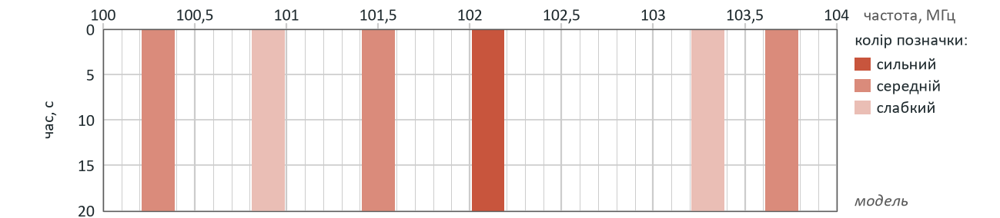
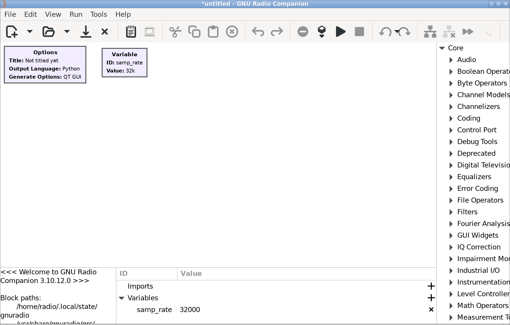
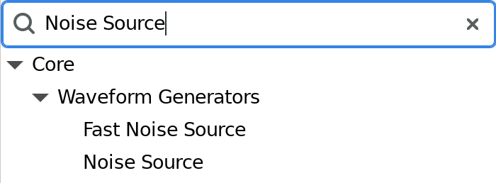
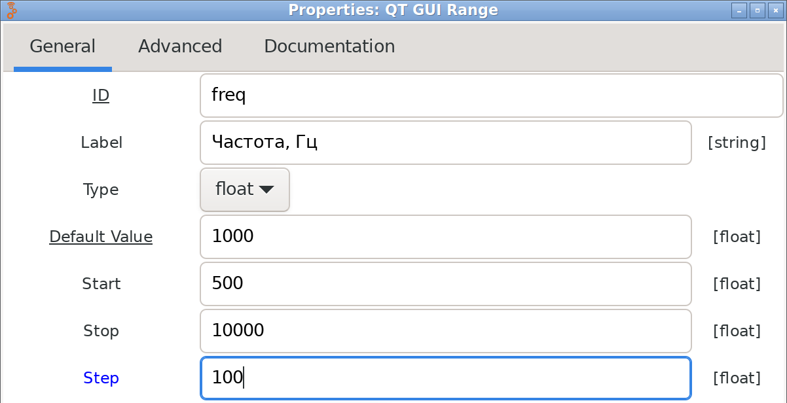
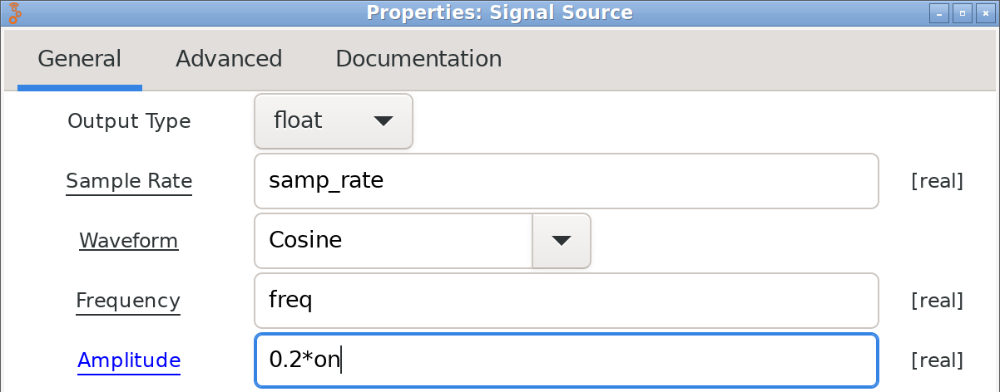
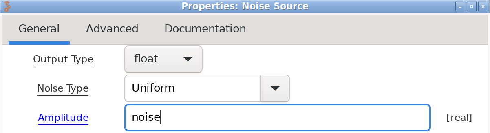
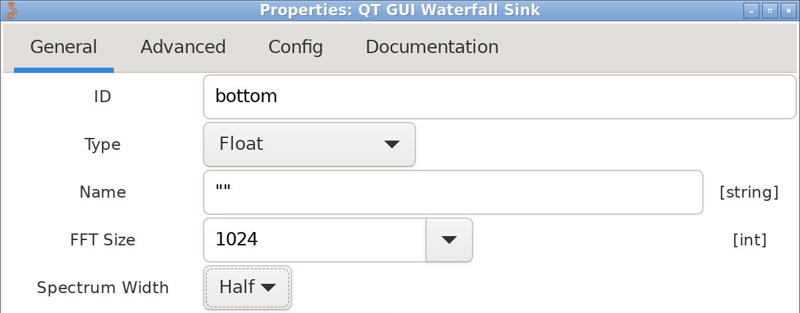

Тема 2. Радіосигнали та об’єкти розвідки
Тут зібрано все для практичної частини теми: вправа зі спектрограмами, відповіді до якої можна перевірити просто на цій сторінці, аркуш для друку, демонстрації довжини хвилі та спектрограми, спектрограма до завдання 1, калькулятор до завдання 3, інструкція до завдання 4, розповідь про сигнали метеосупутників і відповіді.
Вправа № 1. Упізнайте сигнал
На рис. 2.7 показано ефір навчального району з 10:33:05 до 10:33:25: шість вікон, у кожному свій діапазон частот і один сигнал. Кожен сигнал записав приймач поблизу його джерела, а не пост П1. Час іде згори вниз. Працюйте в парі.

Портрети сигналів
| Джерело | Ширина смуги | У часі | За частотою |
|---|---|---|---|
| Радіостанція підрозділу | до 25 кГц | передачі по кілька секунд | на одній частоті |
| Мобільні телефони | до 20 МГц | нерегулярні сплески | кожен телефон у своїй частині смуги |
| Пульт керування безпілотником | десятки МГц | короткі сплески | стрибає по всій смузі |
| Передавач відео з безпілотника | до десятків МГц | без пауз | на одній частоті |
| Радар | близько 1 МГц | сплески через рівні проміжки | на одній частоті |
- Визначте частоту і ширину смуги кожного сигналу. Шириною вважайте всю смугу, в якій сигнал з’являється, а частотою її середину. Зважайте на одиниці.
- Опишіть поведінку кожного сигналу в часі та за частотою словами таблиці портретів.
- За таблицею портретів назвіть джерело кожного сигналу. Які два сигнали мають однаковий портрет? Якого джерела немає на карті рис. 1.4?
- Приймач поста П1 працює від 25 до 6000 МГц. Його спектрограма показує всі сигнали цього діапазону, які доходять до поста: і засобів зв’язку, і радарів. За картою рис. 1.4 і чотирма умовами визначте, які з шести сигналів вона покаже. Сигнал 1 належить радіомережі (Д1, Д2 і Д3), сигнал 4 належить радару 1 (див. задачу 2). Сигнал 5 належить радару 2: о 09:00 він мовчав, а тепер увімкнений. Джерела лишилися на місцях. Антени стоять на висоті 2 м (Д2 і Д3), 4 м (Д1) і 8 м (радар 2). Для якого сигналу відповіді за картою не визначити? Чому?
Карта до кроку 4

Це карта з теми 1: вона показує район о 09:00. Під час вправи джерела стоять на тих самих місцях, а радар 2 уже ввімкнено. Пунктирна межа на карті проходить за 21,8 км від поста П1: до неї пост чує передавач з антеною на висоті 2 м. Передавач із вищою антеною він чує й далі. Координати позначок наведено на сторінці теми 1.
Перевірте себе
Для кожного сигналу оберіть відповіді й натисніть «Перевірити». Частоту сигналу з кроку 1 прочитайте на осі над його вікном: сторінка її не перевіряє. Кнопка «Показати пояснення» відкриває відповіді до всіх кроків.
Крок 3. Однаковий портрет мають сигнали 4 і 5: обидва належать радарам. Розрізнити їх можна за частотою і за проміжком між сплесками. На карті рис. 1.4 немає джерела «Мобільні телефони».
Аркуш для друку
Аркуш до вправи № 1 і завдання 1 (файл PDF, три сторінки формату А4). На першій сторінці рис. 2.7, збільшений в 1,5 раза, і таблиця портретів. На другій текст вправи й таблиця для відповідей. На третій завдання 1: спектрограма радіомовного діапазону і рамка, в якій малюють спектр.
Частота і довжина хвилі
Людина й лінійка тут ті самі, що на рис. 2.1, б підручника. Червона лінія — це хвиля. Позначка над нею показує одну довжину хвилі в масштабі лінійки. Висота лінії розміру не означає. Повзунок змінює частоту. Довжину хвилі сторінка рахує за правилом теми: 300 ділить на частоту в мегагерцах і отримує метри.
Частота 100 МГц: довжина хвилі 3 м. Це метрові хвилі (від 1 м до 10 м). Хто працює на цій частоті: радіомовлення.
Знайдіть частоту, за якої на лінійці вміщується рівно 6 хвиль. Перевірте себе правилом теми або за відповідями.
Спектр і спектрограма
Це жива версія рис. 2.4 підручника. Унизу спектрограма: 10 мс ефіру у смузі частот, де працюють Wi-Fi і Bluetooth, час іде згори донизу. Темніша позначка означає сильніший сигнал. Чорна лінія позначає одну мить, а спектр угорі показує потужність на кожній частоті в цю мить. Сигнали, які лінія перетинає, обведено чорним. Повзунок пересуває лінію.
Мить 2,06 мс. В ефірі Wi-Fi (смуга 20 МГц) і Bluetooth (сплеск 1 МГц на частоті 2455 МГц).
Повільно ведіть лінію згори донизу і стежте за спектром. Скільки разів на ньому з’являється широка смуга Wi-Fi? Перевірте себе за відповідями.
Спектрограма до завдання 1
У підручнику завдання 1 записано так:
На сторінці теми й на аркуші є спектрограма радіомовного діапазону. Замалюйте за нею спектр, як на рис. 2.5, а: позначте кожну радіомовну станцію і ширину її смуги. Яка з них найсильніша? Де є вільне місце?

Це модель: станції на ній вигадано. І частоти станцій, кратні 0,1 МГц, і ширину смуги взято такими, як у справжньому радіомовленні Європи. Колір позначки показує потужність сигналу: що темніша позначка, то сильніший сигнал.
Як малювати спектр. Проведіть вісь частот із тими самими поділками, що й на спектрограмі. Над позначкою кожної станції намалюйте горб такої самої ширини. Що темніша позначка, то вищий горб. Частоту станції показує середина її позначки. На аркуші для друку для спектра є готова рамка.
Калькулятор до завдання 3
У підручнику завдання 3 записано так:
Потрібен комп’ютер або телефон. Калькулятор на сторінці теми обчислює за рівнянням Фрііса потужність сигналу роутера. Як вона зміниться, коли відстань зросте вдвічі? А вдесятеро? Перевірте розрахунок вимірюванням: потужність сигналу Wi-Fi показує, наприклад, застосунок WiFiAnalyzer для телефона з Android. Чому виміряне відрізняється від обчисленого?
Калькулятор рахує за рівнянням Фрііса з теми: P₂ = P₁ · (λ / (4πd))², де P₁ — потужність передавача, P₂ — потужність, яку приймає антена, λ — довжина хвилі, d — відстань між антенами. Довжину хвилі він обчислює сам, за правилом теми: 300 ділить на частоту в мегагерцах і отримує метри.
Що показує калькулятор. Потужність, яку приймає антена, дуже мала, тому калькулятор пише її з префіксом: 1 мВт (міліват) дорівнює тисячній частці вата, 1 мкВт (мікроват) мільйонній, 1 нВт (нановат) мільярдній, 1 пВт (піковат) трильйонній.
Поруч із потужністю калькулятор пише її ще й у децибелах відносно мілівата (дБм): ця одиниця знадобиться, щоб порівняти розрахунок із застосунком для Wi-Fi. Потужність 0 дБм дорівнює 1 мВт, а кожні 10 дБм униз означають удесятеро меншу потужність: −10 дБм відповідає 100 мкВт, −20 дБм відповідає 10,0 мкВт, −30 дБм відповідає 1,00 мкВт, −40 дБм відповідає 100 нВт. Проміжні значення дає формула: потужність у дБм дорівнює 10 · lg(P / 1 мВт), де P позначає потужність у міліватах, а lg десятковий логарифм. Для початкових чисел калькулятора антена приймає 396 нВт, тобто 0,000396 мВт: 10 · lg(0,000396) = −34 дБм. Це між −40 дБм (100 нВт) і −30 дБм (1,00 мкВт).
Рисунок показує, звідки береться рівняння. Передавач випромінює в усі боки однаково, тож на відстані d його потужність розподілена по уявній сфері площею 4πd². Антена, яка працює однаково в усі боки, приймає стільки потужності, скільки проходить крізь клаптик сфери площею λ² / (4π). Отже, антена приймає таку частку потужності передавача, яку площа клаптика становить від площі сфери.
Калькулятор працює, коли в браузері ввімкнено JavaScript.
| Відстань | Площа сфери | Антена приймає | Те саме в дБм |
|---|
Таблиця показує результат для введеної відстані, а також удвічі й удесятеро далі.
Початкові числа описують домашній роутер. Потужність 100 мВт є найбільшою, яку в Європі дозволено випромінювати пристроям Wi-Fi на частотах від 2400 до 2483,5 МГц. Частоту 2400 МГц узято з теми. Відстань 5 м означає, що роутер стоїть у тій самій кімнаті.
Як перевірити розрахунок. Потрібен застосунок, який показує потужність сигналу Wi-Fi в дБм. Для телефона шукайте його в магазині застосунків за словами «Wi-Fi analyzer». На комп’ютері Mac застосунок не потрібен: натисніть значок Wi-Fi, утримуючи клавішу Option. На комп’ютері з Windows система показує сигнал у відсотках, а не в дБм, тому зручніше взяти телефон. Потужність на екрані підписано «RSSI» або «Signal strength», а одиницю написано латинськими літерами: dBm. Станьте за кілька метрів від роутера так, щоб між вами не було стін. Введіть цю відстань у калькулятор і порівняйте обчислену потужність із тією, яку показує застосунок. Якщо застосунок показує і частоту мережі, введіть її теж.
Інструкція до завдання 4: власний сигнал у GNU Radio
У підручнику завдання 4 записано так:
Потрібен комп’ютер із програмою GNU Radio. GNU Radio — це безкоштовна програма, у якій радіопристрої складають із готових блоків. За інструкцією на сторінці теми складіть схему, що створює сигнал однієї частоти й додає до нього шум: випадкові коливання, які заважають прийманню. Схема малює три графіки: сигнал із шумом у часі, спектр і спектрограму. Змінюйте частоту й амплітуду сигналу: що відбувається на кожному графіку? Додайте шум і зменшуйте амплітуду сигналу: на якому графіку сигнал зникає останнім? Вмикайте й вимикайте сигнал, як телеграфіст передає крапки й тире азбуки Морзе. Опишіть портрет такої передачі словами таблиці портретів. Що розвідка дізнається з нього, не читаючи повідомлення?
Схема складається з одинадцяти блоків. Один блок створює сигнал однієї частоти, другий створює шум, третій додає шум до сигналу. Три повзунки задають частоту сигналу, амплітуду сигналу й амплітуду шуму, а прапорець вмикає й вимикає сигнал. Три блоки малюють три графіки. Перший графік показує в часі сигнал, шум та їхню суму, другий показує спектр суми, третій спектрограму суми. Ще один блок відтворює сигнал як звук. На рисунку нижче є ще два блоки, Options і Variable: їх програма ставить у кожну схему сама, і вони зберігають налаштування самої схеми. Під назвою кожного блока програма пише його параметри: потрібні з них названо в кроках нижче.
![Схема в програмі GNU Radio Companion. Угорі стоять блоки Options і Variable, три блоки QT GUI Range і блок QT GUI Check Box. Ліворуч стоять блоки Signal Source і Noise Source, нижче між двома стовпцями блок Add, праворуч один під одним блоки Audio Sink, QT GUI Time Sink, QT GUI Frequency Sink і QT GUI Waterfall Sink. Вісім ліній зі стрілками з’єднують блоки: від блока Signal Source до блоків Add, QT GUI Time Sink і Audio Sink, від блока Noise Source до блоків Add і QT GUI Time Sink, від блока Add до блоків QT GUI Time Sink, QT GUI Frequency Sink і QT GUI Waterfall Sink.](gr-skhema.png)
| Блок | Що робить |
|---|---|
| QT GUI Range | повзунок, яким змінюють частоту сигналу |
| QT GUI Range | повзунок, яким змінюють амплітуду сигналу |
| QT GUI Check Box | прапорець, що вмикає й вимикає сигнал |
| QT GUI Range | повзунок, яким змінюють амплітуду шуму |
| Signal Source | створює сигнал однієї частоти |
| Noise Source | створює шум |
| Add | додає шум до сигналу |
| QT GUI Time Sink | показує сигнал, шум та їхню суму в часі |
| QT GUI Frequency Sink | показує спектр суми сигналу й шуму |
| QT GUI Waterfall Sink | показує спектрограму суми сигналу й шуму |
| Audio Sink | відтворює сигнал без шуму як звук через динамік |
Сигнал має звукову частоту, щоб його можна було почути. Радіопередавачі працюють на значно вищих частотах, але спектр і спектрограма показують їхні сигнали так само.
Інструкцію до завдання 4 перевірено в GNU Radio версії 3.10.12 у системі Linux: рисунки показують вікна цієї версії. У Windows і macOS інструкцію не перевірено: вікна там можуть виглядати трохи інакше. Якщо крок не збігається з тим, що ви бачите на екрані, знайдіть назву з цього кроку в меню програми.
Як встановити програму
GNU Radio входить до набору програм radioconda. Інсталятори цього набору лежать на сторінці radioconda-installer. Для встановлення потрібно близько 5 гігабайтів вільного місця на диску. Схеми складають у частині GNU Radio, яка називається GNU Radio Companion: саме її ви запускатимете.
Термінал — це програма, у якій команди вводять текстом: після кожної команди натискають клавішу Enter. У macOS термінал лежить у теці «Програми», у вкладеній теці «Утиліти». У Linux термінал є в меню програм.
- Windows. Завантажте файл, назва якого закінчується на
Windows-x86_64.exe, і двічі клацніть його. Після встановлення відкрийте в меню «Пуск» теку radioconda і запустіть GNU Radio Companion. Якщо в цій теці немає GNU Radio Companion, запустіть із неї radioconda Prompt: це термінал набору radioconda. У цьому терміналі введіть командуgnuradio-companion. - macOS. Завантажте файл
MacOSX-arm64.pkg(процесор Apple) абоMacOSX-x86_64.pkg(процесор Intel) і двічі клацніть завантажений файл. Який процесор має ваш Mac, показує меню Apple, пункт «Про цей комп’ютер»: у рядку «Чип» названо процесор Apple, у рядку «Процесор» процесор Intel. Після встановлення введіть у терміналі дві команди:conda activate base, а потімgnuradio-companion. - Linux. Завантажте файл, назва якого закінчується на
Linux-x86_64.sh. Відкрийте термінал і перейдіть у теку з цим файлом: введітьcd, пробіл і назву теки, наприкладcd Downloads. Потім введітьbash radioі натисніть клавішу Tab: термінал сам допише назву файлу. Натисніть Enter. Інсталятор ставить запитання англійською. Спершу натисніть Enter і гортайте текст ліцензії пробілом. На запитання про ліцензію введітьyes, на два наступні натисніть Enter. Потім закрийте термінал, відкрийте його знову і введіть дві команди:conda activate base, а потімgnuradio-companion.
Як скласти схему
Меню, блоки й параметри програма називає англійською: тут їх записано так, як на екрані. Кожну дію можна вибрати в меню або викликати клавішею, яку вказано в дужках. На комп’ютері Mac замість клавіші Ctrl натискають клавішу Command.
Відкрийте порожню схему. Після запуску програма показує порожню схему. Якщо відкрито іншу схему, створіть нову: меню File, пункт New (клавіші Ctrl+N). У порожній схемі вже стоять два блоки: Options і Variable.
Угорі вікна стоять меню і ряд кнопок. Білий аркуш посередині призначений для схеми. Праворуч стоїть перелік блоків програми. Унизу ліворуч програма пише свої повідомлення. Таблиця праворуч від повідомлень повторює блок Variable: для завдання ця таблиця не потрібна.

Вікно GNU Radio Companion з порожньою схемою Відкрити рисунок окремо Налаштуйте блок Variable. У комп’ютері сигнал записано як ряд чисел: кожне число показує значення сигналу в одну мить. Таке число називають відліком. Двічі клацніть блок Variable. Відкриється вікно «Properties: Variable». У полі Value замініть 32000 на
48000: стільки відліків за секунду матиме сигнал. Із такою швидкістю відтворюють звук звукові карти комп’ютерів. Натисніть кнопку OK унизу вікна: рисунок нижче показує лише верхню частину вікна.Блок Variable зберігає це число під іменем
samp_rate, і решта блоків бере число за цим іменем. Ім’я блока записано в його параметрі ID. На самому блоці програма пише число коротко: 48k.
Параметри блока Variable Відкрити рисунок окремо Угорі вікна стоять назви вкладок: параметри блока розкладено по них. Вікно відкривається на вкладці General. Деякі назви параметрів програма підкреслює або робить синіми: для завдання ці позначки не потрібні.
Додайте одинадцять блоків. Відкрийте пошук блоків: меню View, останній пункт Find Blocks (клавіші Ctrl+F). Над переліком блоків з’явиться поле пошуку. Введіть у це поле назву блока: у переліку залишаться блоки, у назвах яких є введений текст. Двічі клацніть рядок потрібного блока: блок з’явиться на аркуші схеми.

Пошук блока за назвою Відкрити рисунок окремо Рядки зі стрілками над назвою блока є назвами розділів переліку. За назвами Noise Source і Add пошук залишає кілька блоків. Двічі клацніть той рядок, у якому стоїть лише ця назва, як на рисунку нижче.

За назвою Noise Source пошук залишає два блоки: потрібен другий Відкрити рисунок окремо Блок QT GUI Range додайте тричі, решту блоків по одному разу: QT GUI Check Box, Signal Source, Noise Source, Add, QT GUI Time Sink, QT GUI Frequency Sink, QT GUI Waterfall Sink, Audio Sink. Зайвий блок клацніть і вилучіть: меню Edit, пункт Delete (клавіша Delete).
Новий блок з’являється десь посередині аркуша. Перетягніть блок мишею на вільне місце, щоб блоки стояли, як на рисунку нижче.

Одинадцять блоків додано: сім назв червоні, кнопка ▶ сіра Відкрити рисунок окремо Назви семи блоків червоні. Так програма позначає блок, який ще не готовий до роботи: йому бракує значення параметра або з’єднання з іншим блоком. Повзунки і прапорець з іншими блоками не з’єднують, тому їхні назви чорні. Поки на схемі є червона назва, кнопка ▶ сіра і схему запустити не можна.
Блоки QT GUI Frequency Sink і QT GUI Waterfall Sink показують параметр Bandwidth (Hz) зі значенням 48k. Ширини смуги сигналу цей параметр тут не означає: у ньому стоїть число відліків за секунду з блока Variable.
Задайте параметри блоків. Двічі клацніть блок: відкриється вікно параметрів цього блока. Значення параметра впишіть у поле праворуч від назви параметра. Деякі параметри замість поля мають список значень. Клацніть цей список і оберіть у ньому потрібне значення. Праворуч від поля стоїть підказка у квадратних дужках: вона каже, що має бути в полі. Підказка [string] означає текст, [int] ціле число, [float] і [real] будь-яке число. Змінюйте лише параметри, названі нижче: решту залиште, як є. Вікно закриває кнопка OK. Рисунки показують верхню частину кожного вікна.
QT GUI Range. Таких блоків у схемі три: кожен стає повзунком у вікні запущеної схеми. Три блоки однакові: першим може стати будь-який із них. Параметри кожного з трьох блоків задайте за таблицею.
Параметр Перший блок: частота сигналу Другий блок: амплітуда сигналу Третій блок: амплітуда шуму ID sig_freq sig_amp noise Label Частота, Гц Амплітуда сигналу Амплітуда шуму Default Value 1000 0.2 0 Start 500 0 0 Stop 10000 0.5 0.5 Step 500 0.01 0.01 Числа вписуйте з крапкою, як у таблиці: 0.2, а не 0,2. Параметр Type залиште, як є. ID є іменем блока. Під цим іменем схема зберігає значення повзунка, а інші блоки беруть значення за цим іменем: тому вписуйте імена точно. Label є підписом біля повзунка: якщо програма не приймає українських літер, впишіть підпис латинськими. Default Value задає значення, на якому повзунок стоїть на початку, Start і Stop його найменше й найбільше значення, а Step крок. Повзунок частоти рухатиметься від 500 до 10 000 Гц кроками по 500 Гц. Повзунки амплітуд рухатимуться від 0 до 0,5 кроками по 0,01. На блоці програма пише числа коротко: 1k означає 1000, а 200m означає 0,2. Літера k означає тисячі, літера m тисячні.

Параметри першого блока QT GUI Range: повзунок частоти Відкрити рисунок окремо QT GUI Check Box. ID:
on. Label:Сигнал увімкнено. Під іменемonсхема зберігає стан прапорця. Позначений прапорець у розрахунках дорівнює одиниці, порожній нулю.Signal Source. Output Type:
float. Frequency:sig_freq. Amplitude:sig_amp*on. Значення float означає звичайні числа: такі відліки приймає блок Audio Sink. Значення complex, яке спершу стоїть у параметрі Output Type, означає числа іншого виду: у цьому завданні вони не потрібні. У полі Frequency стоїть ім’я першого повзунка, тому частоту сигналу задає цей повзунок. Записsig_amp*onозначає: значення другого повзунка помножити на стан прапорця. Із позначеним прапорцем амплітуда сигналу дорівнює значенню повзунка, а з порожнім нулю: сигнал вимкнено. Амплітуда 0,2 означає, що значення сигналу змінюються від −0,2 до 0,2. Найгучнішому звукові відповідає амплітуда 1, тому з амплітудою 0,2 сигнал звучить помірно. Параметри Sample Rate і Waveform залиште, як є: у полі Sample Rate стоїть ім’яsamp_rateз кроку 2, а значення Cosine задає плавне коливання однієї частоти.
Параметри блока Signal Source Відкрити рисунок окремо Noise Source. Output Type:
float. Noise Type:Uniform. Amplitude:noise. Список значень параметра Noise Type виглядає як поле зі стрілкою праворуч: клацніть цю стрілку й оберіть Uniform. Зі значенням Uniform блок дає випадкові числа в межах амплітуди шуму: від −0,5 до 0,5, коли амплітуда дорівнює 0,5. У полі Amplitude стоїть ім’я третього повзунка, тому амплітуду шуму задає цей повзунок.
Параметри блока Noise Source Відкрити рисунок окремо Add. IO Type:
float. Це ті самі звичайні числа, що й у блоків Signal Source і Noise Source.QT GUI Time Sink. На вкладці General задайте три параметри. Type:
Float. Number of Points:96. Number of Inputs:3. Значення Float означає ті самі звичайні числа. Number of Points задає, скільки відліків графік малює за один раз. Такий відрізок із 96 відліків триває 96 / 48 000 = 0,002 с, тобто 2 мс. Мілісекунда (мс) є тисячною часткою секунди. Number of Inputs задає, скільки сигналів показує графік. Параметр Number of Inputs стоїть нижче, ніж показує вікно: наведіть вказівник миші на назви параметрів і прокрутіть коліщатко миші. Параметри Name, Y Axis Label і Y Axis Unit залиште, як є: Name задає заголовок графіка, а два інші підпис його вертикальної осі. Дві лапки в полі означають порожній текст.
Параметри блока QT GUI Time Sink на вкладці General Відкрити рисунок окремо Решту параметрів цього блока задають на іншій вкладці. Клацніть назву вкладки Config угорі вікна і задайте ще чотири параметри. Line 1 Label:
сигнал. Line 1 Width:3. Line 2 Label:шум. Line 3 Label:сума. Це назви трьох кривих графіка, а Line 1 Width задає товщину першої кривої. Якщо програма не приймає українських літер, впишіть назви кривих латинськими. Параметри Line 2 Label і Line 3 Label теж стоять нижче, ніж показує вікно. Параметри Control Panel, Legend, Axis Labels і Stem Plot залиште, як є.
Параметри блока QT GUI Time Sink на вкладці Config Відкрити рисунок окремо QT GUI Frequency Sink. Type:
Float. Spectrum Width:Half. Спершу оберіть Type: лише після цього у вікні з’явиться параметр Spectrum Width. Зі значенням Half вісь частот починається з нуля. Параметри Name і FFT Size залиште, як є: Name задає заголовок графіка, а FFT Size число відліків, з яких блок обчислює один спектр.
Параметри блока QT GUI Frequency Sink Відкрити рисунок окремо QT GUI Waterfall Sink. Ім’я в параметрі ID має кожен блок схеми. Програма розставляє графіки у вікні запущеної схеми за іменами блоків: ім’я, перше за абеткою, опиняється внизу. Щоб спектрограма стала під графіком часу і спектром, блокові QT GUI Waterfall Sink дають ім’я
bottom. Вікно блока QT GUI Waterfall Sink показує параметр ID лише тоді, коли в меню View позначено пункт Show All Block IDs. Позначте цей пункт. Рисунок нижче показує верхню частину меню View: пункт Show All Block IDs на ньому останній.
Верхня частина меню View з пунктом Show All Block IDs Відкрити рисунок окремо Потім відкрийте вікно блока й задайте три параметри. ID:
bottom. Type:Float. Spectrum Width:Half. Параметр Spectrum Width і тут з’являється після того, як обрано Type. Параметри Name і FFT Size залиште, як є. Закрийте вікно кнопкою OK і зніміть позначку з пункту Show All Block IDs.
Параметри блока QT GUI Waterfall Sink Відкрити рисунок окремо Audio Sink. Параметрів не змінюйте.
З’єднайте блоки. Вихід блока стоїть на його правому краї й підписаний out. Вхід стоїть на лівому краї й підписаний in. Блок із кількома входами нумерує їх від нуля: in0, in1, in2. Клацніть вихід блока Signal Source, а потім вхід in0 блока Add: між ними з’явиться лінія зі стрілкою. Так проведіть вісім ліній за таблицею. Від одного виходу можна провести кілька ліній.
Від виходу блока До блока На вхід Signal Source Add in0 Noise Source Add in1 Signal Source QT GUI Time Sink in0 Noise Source QT GUI Time Sink in1 Add QT GUI Time Sink in2 Add QT GUI Frequency Sink in Add QT GUI Waterfall Sink in Signal Source Audio Sink in Входи блока QT GUI Time Sink відповідають кривим графіка часу: in0 кривій «сигнал», in1 кривій «шум», in2 кривій «сума». До блока Audio Sink іде сигнал без шуму: шум буде видно на графіках, але не чути.
Колір виходу і входу показує вид чисел: помаранчевий означає float, синій complex. Вихід і вхід, які ви з’єднуєте, мають бути одного кольору. У цій схемі всі виходи і входи помаранчеві. Якщо вихід або вхід блока синій, оберіть float або Float у параметрі Output Type, IO Type чи Type цього блока. Коли всі блоки налаштовано і з’єднано, їхні назви стають чорними, а кнопка ▶ теж чорною.

Готова схема: назви блоків чорні, кнопка ▶ чорна Відкрити рисунок окремо Збережіть схему: меню File, пункт Save (клавіші Ctrl+S). Програма відкриє вікно «Save a Flow Graph to a File...» і запропонує назву
untitled.grc, у якій виділено слово untitled. Введіть замість цього слова syhnal і натисніть Enter: схема збережеться у файліsyhnal.grc. Якщо ви стерли всю назву, введіть її повністю:syhnal.grc.Запустіть схему. Спершу зробіть звук комп’ютера тихішим. Запустіть схему: меню Run, пункт Execute (клавіша F6 або кнопка ▶). Під час першого запуску програма може показати вікно «Warning: missing xterm executable». Це вікно повідомляє англійською, що програма не знайшла на комп’ютері термінала. Цій схемі термінал не потрібен: натисніть OK. Таке вікно з’являється лише раз.

Попередження під час першого запуску Відкрити рисунок окремо Відкриється вікно «Not titled yet», і зазвучить сигнал: рівний звук однієї висоти. Щоб зупинити схему, перейдіть у вікно програми GNU Radio Companion і виберіть там меню Run, пункт Kill (клавіша F7 або кнопка ■).
Вікно відкривається малим і показує лише повзунки, прапорець і графік часу. Розгорніть вікно на весь екран. На екрані ноутбука три графіки можуть не вміститися й у розгорнутому вікні: тоді праворуч з’являється смуга прокрутки. Щоб побачити спектрограму, потягніть цю смугу вниз. Коліщатком миші вікно не прокручуйте: над графіком коліщатко змінює масштаб графіка, а над повзунком значення повзунка. Якщо масштаб графіка змінився, зупиніть схему й запустіть її знову.

Вікно одразу після запуску: видно лише графік часу Відкрити рисунок окремо ![Вікно «Not titled yet». Угорі повзунок «Частота, Гц» із числом 1000, повзунок «Амплітуда сигналу» з числом 0.2000, позначений прапорець «Сигнал увімкнено» і повзунок «Амплітуда шуму» з числом 0.0000. На графіку часу товста синя крива робить два коливання між −0,2 і 0,2, тонка зелена йде по ній, червона лежить на нулі. Праворуч від графіка назви кривих: сигнал, шум, сума. На спектрі один пік на частоті 1 кГц. На спектрограмі вертикальна смуга на частоті 1 кГц: нижня половина спектрограми заповнена, верхня рожева.](gr-zapusk.png)
Вікно запущеної схеми: повзунки, прапорець, графік часу, спектр і спектрограма Відкрити рисунок окремо Угорі вікна стоять повзунок «Частота, Гц», повзунок «Амплітуда сигналу», прапорець «Сигнал увімкнено» і повзунок «Амплітуда шуму». Під ними стоять три графіки: графік часу, спектр і спектрограма. На початку кожен повзунок стоїть на значенні свого параметра Default Value. Поле праворуч від повзунка показує значення повзунка числом.
Графік часу показує, як значення сигналу змінюються з часом. На осі Time (ms) стоїть час у мілісекундах, на осі Amplitude значення сигналу. Товста синя крива «сигнал» показує сигнал, червона крива «шум» шум, зелена крива «сума» їхню суму. Назви кривих стоять праворуч від графіка. Поки амплітуда шуму дорівнює нулю, червона крива лежить на нулі. Зелена крива тоді йде точно по синій: зелена тонша, тому синю видно з обох боків.
Графік малює сигнал відрізками по 2 мс: один відрізок, потім наступний. За 2 мс сигнал частотою 1000 Гц робить два коливання: 1000 · 0,002 = 2. Повзунок частоти рухається кроками по 500 Гц. Кожен крок додає до відрізка у 2 мс рівно одне коливання: 500 · 0,002 = 1. Тому у відрізку завжди вміщується ціле число коливань: кожен відрізок починається з того самого місця хвилі, і хвиля на графіку стоїть нерухомо.
Спектр показує суму сигналу й шуму в цю мить. На осі Frequency (kHz) стоїть частота в кілогерцах: пік піднімається на частоті 1 кГц, яку задає повзунок. Пік має схили, бо програма обчислює спектр із короткого відрізка сигналу: на такому спектрі навіть одна частота дає не тонку лінію, а вузький пік. З тієї самої причини внизу обабіч піка видно два малі горбики.
Вертикальна вісь Relative Gain (dB) показує потужність сигналу в децибелах (дБ): що вище точка кривої, то сильніший сигнал на цій частоті. Децибели порівнюють потужності: кожні 10 дБ угору означають удесятеро більшу потужність. Програма не знає справжньої потужності сигналу, тому відлічує децибели від власного умовного нуля. Підпис Data 0 праворуч і тонку лінію на позначці 0 програма додає сама: для завдання вони не потрібні.
Спектрограма складається з рядків: кожен рядок є спектром в одну мить. Колір показує потужність сигналу. Темно-бірюзове тло означає, що сигналу на цій частоті немає. Слабкий сигнал має світліший бірюзовий колір, сильніший жовтий, найсильніший червоний. Тому сигнал однієї частоти малює смугу з червоною серединою і світлішими краями: середина відповідає вершині піка, краї його схилам.
Новий рядок з’являється внизу, а старі піднімаються вгору. Тому сигнал, частота якого не змінюється, малює вертикальну смугу. Вісь Time (s) показує, скільки приблизно секунд тому з’явився рядок. Програма пише числа цієї осі у вигляді 2.00e+01: це 2,00 · 101, тобто 20 секунд. Рожеву частину вгорі програма ще не заповнила рядками.
Осі частот спектра і спектрограми закінчуються на 24 кГц. Щоб записати одне коливання, потрібно щонайменше два відліки. Тому сигнал із 48 000 відліків за секунду містить частоти до 48 000 / 2 = 24 000 Гц, тобто до 24 кГц.
Проведіть чотири досліди. Під час кожного стежте за трьома графіками й записуйте, що змінюється на кожному з них.
Перший дослід, частота. Повільно тягніть повзунок «Частота, Гц» праворуч, а потім поверніть його на 1000.
Другий дослід, амплітуда. Пересуньте повзунок «Амплітуда сигналу» з 0,2 на 0,4, а потім поверніть його на 0,2.
Третій дослід, шум. Пересуньте повзунок «Амплітуда шуму» на 0,5. Клацніть назву «сигнал» праворуч від графіка часу: синя крива зникне, і сигнал доведеться шукати в зеленій кривій суми. Потім повільно зменшуйте амплітуду сигналу до 0,05. Позначте, на якому графіку сигнал зникає першим, а на якому останнім. Наприкінці поверніть амплітуду шуму на 0, а амплітуду сигналу на 0,2. Ще раз клацніть назву «сигнал»: синя крива повернеться.
Четвертий дослід, азбука Морзе. Клацайте прапорець, щоб вмикати сигнал на короткий або довший час. Азбука Морзе записує кожну літеру короткими й довгими сигналами: крапками й тире. Тире триває як три крапки. Спробуйте передати дві літери. Літера Р: крапка, тире, крапка. Літера Е: крапка. Між літерами робіть довшу паузу. Подивіться, який слід залишає передача на спектрограмі.


Після дослідів дайте відповіді на запитання завдання. Таблиця «Портрети сигналів» є в підручнику, у пункті 2 теми. Та сама таблиця стоїть на цій сторінці вище, у частині «Вправа № 1».
Якщо ваша схема не запускається, порівняйте її з готовою: syhnal-hotova.grc. Завантажте цей файл і збережіть у теці, яку легко знайти. Потім відкрийте файл у програмі: меню File, пункт Open (клавіші Ctrl+O).
Сигнали метеосупутників
Чотири умови перехоплення діють для кожного приймача, не лише для приймача розвідки. Ось приклад із мирного життя.
Метеосупутники NOAA-15, NOAA-18 і NOAA-19 названо за англійським скороченням назви Національного управління океанічних і атмосферних досліджень США (NOAA), якому вони належали. Вони облітали Землю над полюсами, знімали її й безперервно передавали знімки радіосигналом.
Кожен супутник передавав на своїй частоті між 137 і 138 МГц: NOAA-15 на 137,62 МГц, NOAA-18 на 137,9125 МГц, NOAA-19 на 137,1 МГц.
Передавач супутника працював увесь час. Проте прийняти його сигнал можна було лише тоді, коли супутник піднімався над горизонтом приймача: за один проліт щонайбільше близько 14 хвилин.
Передачу задумали так, щоб її могла приймати порівняно недорога наземна станція. Знімки приймали в себе вдома й аматори, для яких радіо було захопленням.
У цій історії видно всі чотири умови з теми. Умова частоти: приймач мав працювати на частоті супутника. Умова часу: слухати треба було саме під час прольоту. Умова потужності: коли супутник заходив за горизонт, його сигнал до приймача не доходив, як і сигнал наземного передавача з-за радіогоризонту. Четверта умова, напрямок, виконувалася сама: супутник передавав знімки саме для наземних станцій.
У 2025 році всі три супутники вивели з експлуатації.
Розвідка діє так само, як ті, хто приймав знімки: налаштовує приймач на потрібну частоту і слухає тоді, коли передавач в ефірі й не за горизонтом. Різниця в тому, що противник призначає свої сигнали не для розвідки.
Відповіді
Відповіді до вправи, контрольних запитань, задач і завдань теми. Спершу виконайте вправу самі.
Публікації, з яких узято дані сторінки
- POES Operational Status. Сторінка Національного управління океанічних і атмосферних досліджень США, англійською мовою, оновлена 19 серпня 2025 р. Словом POES у назві управління скорочено називає свої метеосупутники. Сторінка наводить частоти передавачів супутників NOAA-15, NOAA-18 і NOAA-19 та дні, коли їх вивели з експлуатації.
- Educator’s guide for building and operating environmental satellite receiving stations. Посібник того самого управління для вчителів, виданий 1989 р. і передрукований 1991 р., англійською мовою. Пояснює, як метеосупутники передавали знімки і як їх приймала наземна станція.
- ERC Recommendation 70-03. Рекомендація європейського об’єднання адміністрацій зв’язку CEPT, редакція від червня 2019 р., файл PDF англійською мовою. У додатку 3 наведено найбільшу потужність, яку дозволено випромінювати пристроям Wi-Fi.
- Spectrum Monitoring. Довідник Міжнародного союзу електрозв’язку про спостереження за радіочастотним спектром, видання 2011 р., англійською мовою. З нього взято правило, за яким частоти радіомовних станцій у Європі кратні 0,1 МГц, ширину смуги однієї станції для спектрограми до завдання 1 і площу клаптика сфери для рисунка до калькулятора.
- GNU Radio. Репозиторій програми GNU Radio на сайті GitHub, англійською мовою. З файлів програми взято назви блоків схеми, назви їхніх параметрів і клавіші, якими схему зберігають, запускають і зупиняють.
- radioconda-installer. Сторінка проєкту radioconda на сайті GitHub, англійською мовою. З неї завантажують інсталятори набору програм, до якого входить GNU Radio.
Записи ефіру з IQEngine
Рис. 2.5 підручника побудовано з двох записів справжнього ефіру, які зберігає сайт IQEngine. З кожного запису взято короткий відрізок і з нього обчислено спектр і спектрограму. Автора, ліцензію й приймач кожного запису названо за його описом на сайті.
- Рис. 2.5, а: 4 с запису analog_FM_France. Автор: Jean-Michel Friedt. Ліцензія: CC BY-SA. Записано приймачем RTL-SDR.
- Рис. 2.5, б: 20 мс запису ism_band_24. Автор: Marc Lichtman. Ліцензія: CC BY-SA. Записано приймачем USRP B210.